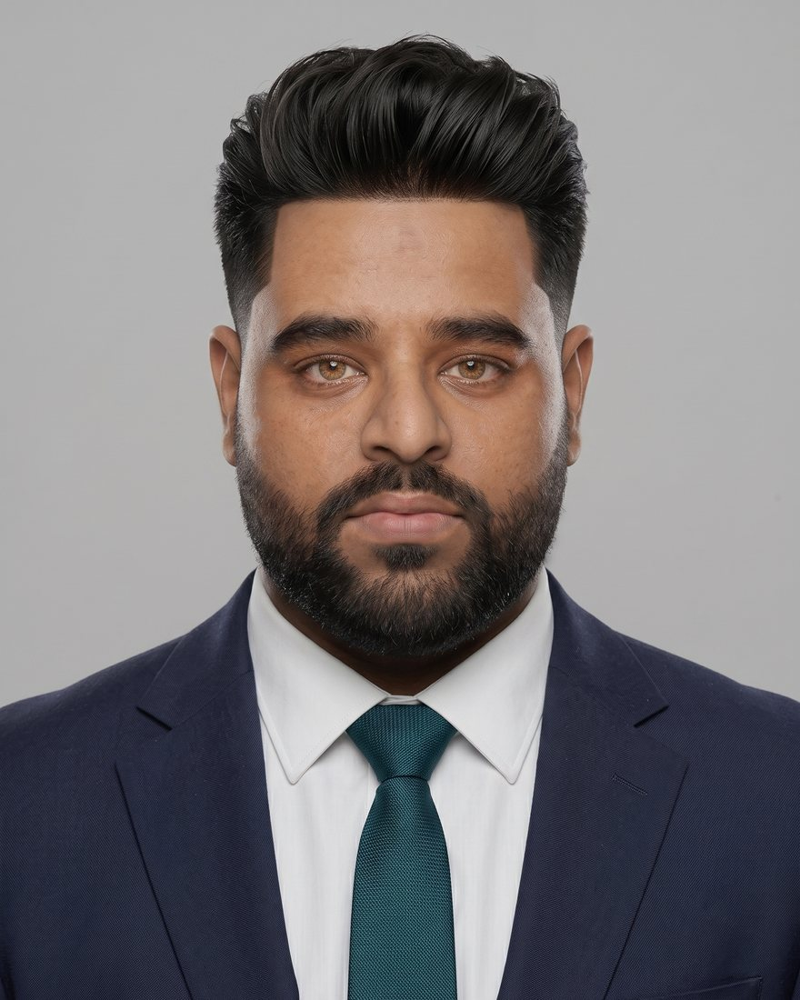

Creative direction
Concept, script structure, multi-camera set layout and live direction for films, web series, ad films and documentaries. I lead the crew and keep the story and the brief in the same room.
Scriptwriting · Cinematography · Directing
Hi, I'm
Creative manager, media operations lead and director. I run the whole pipeline: concept, production, post, and the campaigns that carry the work. Eight years across filmmaking, performance marketing and AI-first production, based in Pune.
Five jobs that usually sit with five different vendors. I own them as one system, so a script, a shoot day and an ad budget answer to the same plan.
Concept, script structure, multi-camera set layout and live direction for films, web series, ad films and documentaries. I lead the crew and keep the story and the brief in the same room.
Scriptwriting · Cinematography · DirectingStudio workflows, production planning, asset trafficking and delivery schedules for several client accounts at once. Weekly performance cadences and KPI tracking keep the squads honest.
Studio ops · Production planning · Agency managementRepeatable paths from brief to published asset: editing, VFX, colour, Dolby mixing and multi-platform distribution, with creative teams working in parallel instead of in a queue.
Post-production · Audio mastering · DistributionFull-funnel strategy for brands and public campaigns. Paid media on Meta and Google, landing pages built for conversion, and search work that reaches answer engines as well as classic results.
Meta Ads · Google Ads · CRO · SEO · AEO · GEOGenerative tools for pre-visualisation and ideation, with automations that route assets and leads. Less time on first drafts, more time on the work that needs a human eye.
Runway · Midjourney · Gemini · Make · Zapier · n8nEmpanelled expert trainer with MCED and the Udyog Vibhag, Government of Maharashtra. I teach digital media, design, camera craft and online business scaling to local innovators and students.
Workshops · Team leadership · MentoringOne production line, owned end to end. These are the stages and the tools I run each one with.
Outline, treatment, AI pre-vis
Multi-cam, lighting, lens plan
DaVinci Resolve, Premiere Pro, Final Cut Pro
After Effects, 2D/3D, motion graphics
DaVinci Resolve grade
Fairlight, Audition, Dolby mix
Meta, Google Ads, YouTube, OTT
The AI layer. Runway, Midjourney, Google Flow, Gemini and ChatGPT feed pre-visualisation, concept outlines and campaign visuals before a camera rolls.
The automation layer. Make, Zapier and n8n move assets between teams and push leads into the CRM, which is where the faster turnaround comes from.
A short list from more than 150 assignments across Maharashtra.
Owned the full post-production pipeline: primary edit, VFX assets, 2D and 3D animation, motion graphics and the Dolby sound master.
Lead video editor and VFX layout designer on a theatrical, multi-narrative love story.
Supervised post-production management, structural edits and VFX rendering.
Dubbing director for the Marathi to Banjara version, covering translation, acoustic alignment and speech engineering.
Built and ran the full digital plan: micro-targeted ads, automated voter content flows and candidate branding.
Directed and produced more than 30 regional ad films, promotional clips and official communication packages.
Scripted and shot awareness films for state department channels, including Mission Gauri on third-gender advocacy and a film on plastic encroachment.
More than 40 accounts across tech, e-learning and corporate sectors, delivered at 3.8x or better return on ad spend with customer acquisition cost down 28%.
Masterclasses, lecture modules and micro-learning animations for professional learning networks.
Full identity work, landing page assets, promotional ad films and brand strategy for technology start-ups.
Audio engineering, vocal tuning and mastering, then release on Spotify, Apple Music and YouTube. Singles include Kaise Bana Swaraj, Khamosh Wida and Shiv Tandav.
Director, lead composer and actor. The track Sonya Rishta Sansar reached more than 200,000 organic views.
From freelance cinematography to running a multi-client creative and media operation.
Y R Studios, Nanded · Director and studio manager
MCED and Udyog Vibhag, Government of Maharashtra · Empanelled expert
Yugantar Media & Films · DOP, editor and team leader
Freelance media and film production
Grouped by the job they do, so a hiring manager can find the right one fast.
Market Penetration and Organizational Leadership. Swami Ramanand Teerth Marathwada University, 2025.
Narrative Strategy and Communication. SRTM University, 2018.
Polytechnic, Autonomous Board of Technical Education, 2016.
Open to hybrid and remote roles, and to agency or brand partnerships. I am a fit for: